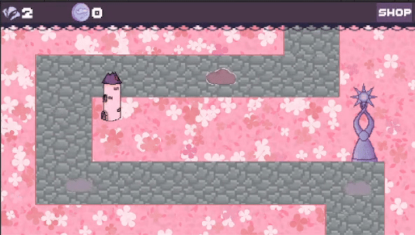

Cloudy Towers
This was my project for second year's tower defense assignment. All assets were made
by me. This projects was to start learning about principles such as D.R.Y.
(don't repeat yourself) and S.R.P. (Single Responsibility)
Languages: C#
Time Spent: 10 weeks
Programs: Unity, Firealpaca, Pixilart.com
People: 1, me.
Enemy
For the enemies, I chose to make thunderclouds that will try to get rid of the sunny weather. These enemies go to their new position using waypoints that have been stored in a list. The asset was made by me with pixilart.com The original idea for my game was to add a twist of horror for it, so the original idea for my enemy was something ominous. Something that could be cute, but is not cute at all in it's context. That plan didn't go through because I had less time than I had expected. compared to my skill level at the time.
we want to spawn the enemy before we can make it move in the first
place. Since I wanted a delay between when an enemy is
spawned after the other, I used an IEnumerator.
This decision was made because it doesn't block the game like a 'Thread.Sleep()' would.
The IEnumerator, ensures the game remains responsive and performs other tasks while it waits for the delay to complete.
In update, we first check how much time has passed by subtracting 'Time.DeltaTime'
from the 'timeBetweenDelay' variable I have declared in the class. This is 3 by standard. If the variable hits 0,
it starts the Co-routine, and instantiates the enemy.
then, I made a script called WaypointScript. This script uses an array that collects every waypoint that is a child of the waypoint holder, which is an empty game object in the level itsself. The reason behind this is so I didn't have to manually add every waypoint to the array. Instead, I used a for loop which checks how many children there are in an array. This is for a DRY principle. (Don't Repeat Yourself). This array will be used in another script, which is the cloud movement.
To make the cloud move towards a certain direction,
I first needed to get the first waypoint of the array.
That was done by grabbing the array itsself.
That automatically starts at 0.
The WaypointVector is defined by finding the distance between the cloud and the waypoint.
If it is close enough to the waypoint, the index gets increased in the if-statement.
In the 'OnTriggerEnter2D' function, it checks if it collides with the last waypoint, and it destroys the object.
then, I made a script called WaypointScript. This script uses an array that collects every waypoint that is a child of the waypoint holder, which is an empty game object in the level itsself. The reason behind this is so I didn't have to manually add every waypoint to the array. Instead, I used a for loop which checks how many children there are in an array. This is for a DRY principle. (Don't Repeat Yourself). This array will be used in another script, which is the cloud movement.
To make the sunspire get damaged, they just have to pass the asset on the map.
I did this by putting a collission on the stormclouds passing over the path and
checking if it isn't a neutralized cloud anymore, and if the tag of the item it
collided with is "sunspire"
from there, i grab the global data's (global data = a script that stores all important
data, e.g. Currency Amount, etc.) spire health and subtract the damage variable from
it.
To be able to neutralize the clouds, and ensure the weather remains sunny,
we need to be able to "kill" the cloud. First, we get the health from the enemy
stats. When we have that completed, we check if the bullet collides with the enemy,
we remove the amount of damage from the health, and we destroy the bullet
After that, we check if the health is equal to, or below 0, we give the player
one point, set the "HasDied" boolean (true or false) to true, and we change the sprite
to the neutralized cloud, also changing it's tag to "neutralized"
The tower (player)

Of course, to protect your precious sunlight, you can buy towers. A lot goes on behind the scenes of this tower,
which I will be explaining.
Originally, I wanted to add three phases. A broken tower, A tower in construction, and a repaired tower.
Due to the lack of time by the time I wanted to make more towers, I sadly didn't have the chance to.
You can buy as many towers as you want, and you can upgrade each of them.
Looking back, I would have definitely done it a different way. But this only gives me the want to possibly re-make the game.
keep an eye out for that :D